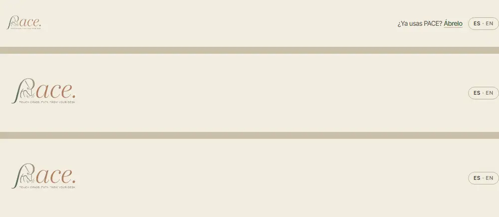
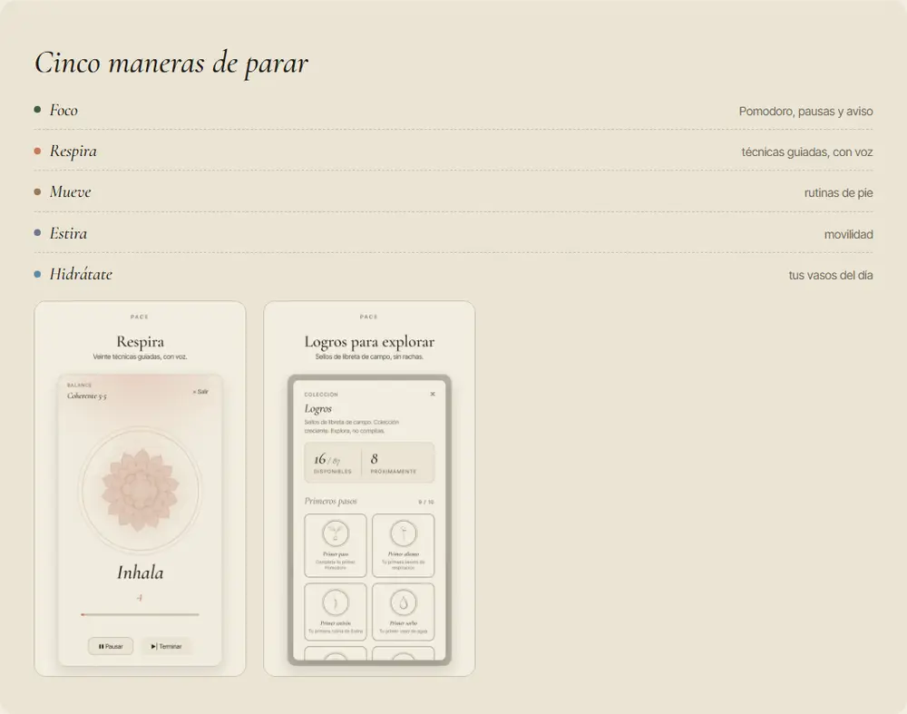
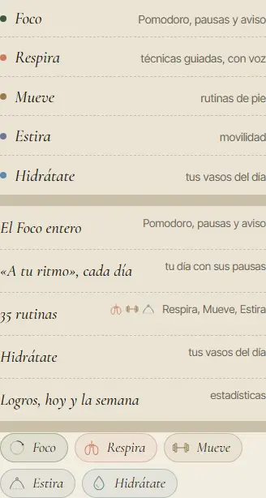
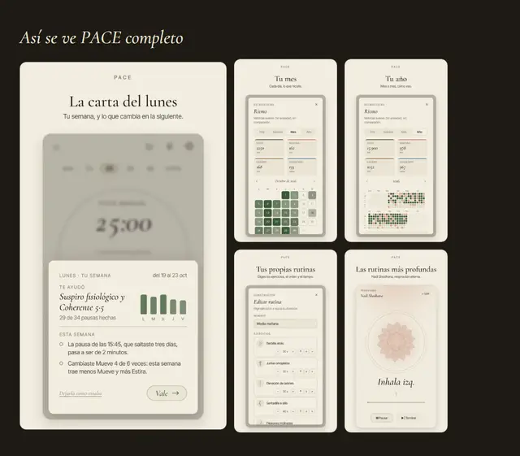
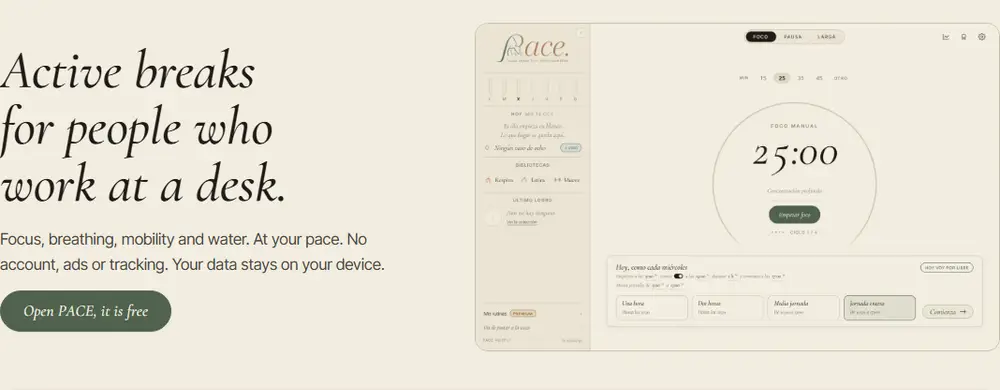
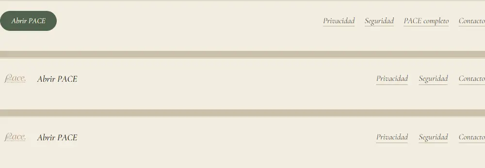

PACE · la web · 10 nov. 2026
La landing, PACE completo y /beta, pintadas con su marcado y su CSS de verdad y una capa de estilo encima. Nada está montado: la landing B sigue lista para juntar tal como está, y cualquiera de estas va después, con tu letra.
Ningún texto cambia. Recomiendo la A. Todavía falta: B · Una jornada y C · Pulido sobrio (se están pintando; esta misma página se pondrá al día).
Medido en la rama, a 360 y a 1280 px. Las tres se leen como tres webs parecidas, no como una.






Un solo papel, sin bandas de color. Un filete fino separa las secciones; donde hay texto, el título va al margen y el texto a su derecha; las capturas van montadas como láminas, con papel alrededor y un segundo filete fuera. Los cinco módulos llevan su dibujo de la app en las tres páginas, lo que se elige (el plato de por vida, «Lo que te llevas») lleva un segundo filete, como un sello, y los pasos de /beta van unidos por un hilo. Cabecera y pie, iguales en las tres.
Arregla 1, 2 (el aspecto; los enlaces son la letra 3), 3 en el ordenador y en la landing del móvil, 4, 5, 6, 8 y 9. El 7 necesita capturas en oscuro (letra 2).
En el marcado solo cambian dos cosas: en /beta, la portada se agrupa en dos para poner las capturas en fila debajo del título; en /premium, la pantalla de la app es la nueva.
Peso: 3,2 KB comprimido (12,0 KB sin comprimir); la landing sale en 80 ms (hoy, 84).
La portada es el aro del Foco: el título dentro y el botón abajo, como «Empezar foco». De ahí baja la línea del día por el margen, con una parada en el color de cada módulo al empezar cada sección, y las capturas van grandes.
Se está pintando.
Las bandas de hoy, arreglando solo lo medido: cabecera y pie iguales, capturas más grandes, líneas de unas 65 letras, la lista de los módulos con su dibujo y las preguntas más estrechas.
Se está pintando.
1 · ¿Qué dirección montamos en las tres páginas?
A · Cuaderno de campo (recomendada): es la que más defectos arregla sin tocar ninguna decisión tuya anterior (el mosaico de /premium, los platos, los pasos de /beta), y su aire de cuaderno es el de los logros y los dibujos de la app.
B · Una jornada: la más vistosa; cambia el mosaico que elegiste el 23 oct.
C · Pulido sobrio: la más segura; deja las bandas de hoy.
Ninguna: la web se queda como está.
2 · ¿Rehago las capturas en oscuro?
Sí (recomendada): con la app de la rama en su tema oscuro; cada navegador baja solo las de su tema, así que no pesa más para nadie (unos 350 KB más en el repo). Arregla el 7 en cualquier dirección.
No: las capturas siguen en claro también en oscuro.
3 · ¿El pie de las tres páginas enlaza a las otras dos?
Sí (recomendada): con textos que ya existen, «PACE completo» y «Android e iPhone»; hoy, desde /premium no se llega a /beta ni al revés.
No: cada pie se queda con sus enlaces.
4 · ¿La pantalla de la app de /premium, rehecha en su idioma y su tema?
Sí (recomendada): es la de las fotos de las direcciones, sacada de la app de la rama; arregla el 6.
No: se queda la de hoy, en castellano.
5 · Aparte, sin cambiar el aspecto: el idioma de entrada
La landing sale en inglés si el navegador no está en castellano; /premium y /beta, en castellano si no está en inglés. Quien llega con el navegador en francés ve la landing en inglés y PACE completo en castellano.
Igualar las tres a la regla de la landing (recomendada): inglés salvo navegador en castellano. Dejarlo: como hoy.
Generada con docs/proposals/web-estetica-9nov/maqueta.js y pagina.js en la rama claude/landing-c-9nov; la copia, con sus fotos, está en esa carpeta.